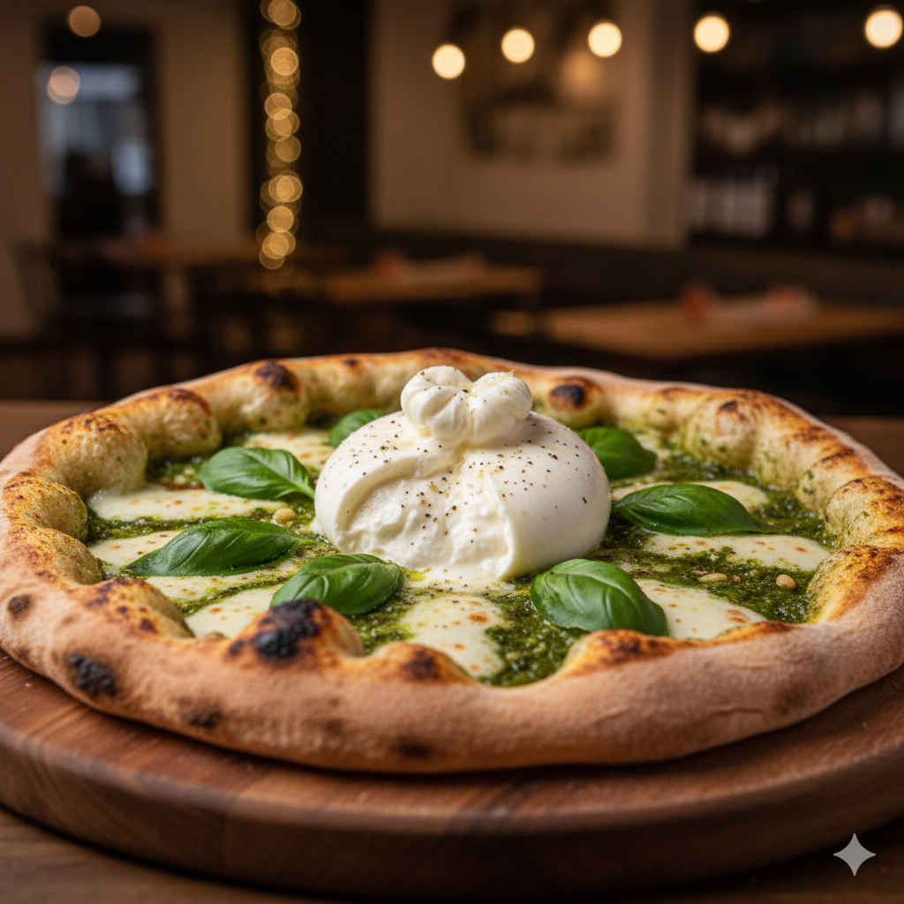

| Prato |
Descrição |
Preço |
Imagem |
| Carbonara Autêntica |
Nossa releitura de um clássico romano. Molho cremoso de queijo pecorino e gema de ovo, finalizada com cubos de guanciale crocante, pimenta do reino moída na hora e lascas de pecorino. Uma verdadeira experiência de sabores intensos. |
R$ 78,00 |
 |
| Pesto Genovês com Burrata |
Uma pizza leve e fresca que celebra a simplicidade. Base de molho de tomate San Marzano, queijo muçarela de búfala, coberta com um generoso e fresco pesto genovês caseiro e finalizada com uma burrata cremosa no centro. |
R$ 85,00 |
 |
| O Inferno |
Para os amantes de sabores picantes e defumados. Molho de tomate, muçarela, salame picante (calabresa), pimentões assados, um toque de azeite de pimenta e fatias de pimenta jalapeño fresca. Uma explosão de calor e sabor. |
R$ 65,00 |
 |
| Serrano e Figo |
Uma combinação agridoce e sofisticada. A base é uma fina camada de molho de tomate e muçarela, coberta com fatias de presunto cru, lascas de figo e queijo de cabra cremoso. Finalizada com um fio de mel e folhas de rúcula. |
R$ 75,00 |
 |
| Verduras da Horta |
Uma opção vegetariana que é pura cor e sabor. Coberta com abobrinha e berinjela grelhadas, tomate cereja assado, cebola roxa, azeitonas pretas e muçarela. Finalizada com manjericão fresco e um toque de azeite de oliva extra virgem. |
R$ 69,00 |
 |